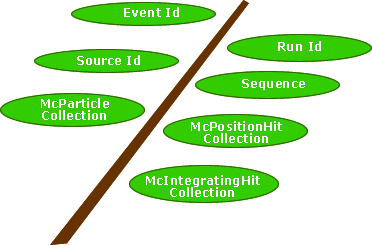

Workbook : mcRootData
This page last changed on Oct 13, 2004 by heather.
All Gleam output is in ROOT format. To read and analyze these files you will need to use an application capable of reading in ROOT files. The easiest path is to use the ROOT analysis environment. For more general information about ROOT and how we use it in GLAST, please see the GLAST ROOT home page: http://www-glast.slac.stanford.edu/software/root
To read the Monte Carlo files, use ROOT version >= 3.02.07.The top-level class is McEvent and contains the data for one event:
- Event ID and Run ID
- TimeStamp
- Source ID
- Sequence number corresponding to source
- Collection of McParticles
- Collection of McIntegratingHits
- Collection of McPositionHits
Mc Tree: McEvent Branch
The Mc tree has one branch, McEvent. All of the Monte Carlo data is contained within this single branch.

McEvent
| Method | Description | Return Value |
|---|---|---|
| getEventId( ) | Provides the Event number | UInt_t |
| getRunId( ) | Provides the Run number | UInt_t |
| getTimeStamp( ) | Returns the timestamp since mission start 1/1/2001 in seconds | Double_t |
| getSourceId( ) | Provides source Id | Int_t |
| getSequence( ) | Provides sequence number associated with source | UInt_t |
| getMcParticleCount( ) | Number of McParticles in the collection | UInt_t |
| getMcParticle(UInt_t index ) | Returns one McParticle corresponding to index | const McParticle* |
| TObjArray* getMcParticleCol( ) | Returns the full McParticle collection in the form of a TObjArray | TObjArray* |
| UInt_t getMcPositionHitCount( ) | Returns the number of McPositionHits in the collection | UInt_t |
| const McPositionHit* getMcPositionHit(UInt_t index) | Returns the McPositionHit from the collection corresponding to index. | const McPositionHit* |
| TObjArray* getMcPositionHitCol( ) | Returns the full McPositionHit collection in the form of a TObjArray | TObjArray* |
| UInt_tgetMcIntegratingHitCount( ) | Returns the number of McIntegratingHits in the collection | UInt_t |
| const McIntegratingHit* getMcIntegratingHit(UInt_t index) | Returns the McIntegratingHit from the collection corresponding to index. | const McIntegratingHit* |
| TObjArray* getMcIntegratingHitCol( ) | Returns the full McIntegratingHit collection in the form of a TObjArray | TObjArray* |
McParticle
| Method | Description | Return Value |
|---|---|---|
| Int_t getParticleId( ) | Returns the particle id | Int_t |
| Int_t getParticleProperty( ) | Returns the status flags | Int_t |
| UInt_t getStatusFlags( ) | Returns the status flags | UInt_t |
| Bool_t primaryParticle( ) | Flag denoting if this is a primary particle (true) or not (false) | Bool_t |
| std::string& getProcess( ) | Returns name of process that produced this McParticle | std::string& |
| const TVector3& getInitialPosition( ) | Initial position | const TVector3& |
| const TVector3 getFinalPosition( ) | Final position | const TVector3& |
| const TLorentzVector& getInitialFourMomentum( ) | Initial momentum | const TLorentzVector& |
| const TLorentzVector& getFinalFourMomentum( ) | Final momentum | const TLorentzVector& |
| const McParticle* getMother( ) | Returns a pointer to the mother McParticle | const McParticle * |
| const McParticle* getDaughter(UInt_tindex) | Returns a pointer to the daughter McParticle corresponding to index | const McParticle * |
| const TRefArray& getDaughterList( ) | Returns the full array of daughter particles | const TRefArray& |
McPositionHit
| Method | Description | Return Value |
|---|---|---|
| const VolumeIdentifier& getVolumeId( ) | Returns the identifier for the volume | const VolumeIdentifier& |
| Int_t getMcParticleId( ) | Id of McParticle associated with hit | Int_t |
| Int_t getOriginMcParticleId( ) | Id of origin McParticle | Int_t |
| const TVector3& getEntryPosition( ) | Entry position in local coordinates | const TVector3& |
| const TVector3& getGlobalEntryPosition( ) | Entry position in global coordinates | const TVector3& |
| const TVector3& getExitPosition( ) | Exit position in local coordinates | const TVector3& |
| const TVector3& getGlobalExitPosition( ) | Exit position in global coordinates | const TVector3& |
| Double_t getDepositedEnergy( ) | Energy deposited | Double_t |
| Double_t getParticleEnergy( ) | Energy of the particle | Double_t |
| Double_t getTimeOfFlight( ) | Time of Flight | Double_t |
| Double_t getDirectionCosine( ) | Direction Cosine | Double_t |
| const McParticle* getMcParticle( ) | Returns the McParticle that made the hit | const McParticle* |
| const McParticle* getOriginMcParticle( ) | Returns the origin McParticle | const McParticle* |
McIntegratingHit
| Method | Description | Return Value |
|---|---|---|
| const VolumeIdentifier getVolumeId( ) | Returns the identifier for the volume | const VolumeIdentifier |
| Double_t getTotalEnergy( ) | Returns the total energy deposited in the volume | Double_t |
| const TVector3 getMoment1( ) | First moment | const TVector3 |
| const TVector3 getMoment2( ) | Second moment | const TVector3 |
| Double_t getMcParticleEnergy(Particle p) | Double_t |
VolumeIdentifier
| Method | Description | Return Value |
|---|---|---|
| UInt_t operator[](unsigned int) | Returns one single element of the VolumeIdentifier | UInt_t |
| Int_t size( ) | Returns number of elements in the volId | Int_t |
| std::string name( ) | Returns full string of ids separated by '/' | std::string |
| UInt_t getBits0to31( ) | Returns the least significant 32 bits in the volumeId | UInt_t |
| UInt_t getBits32to63( ) | Returns the more significant 32 bits in the volumeId | UInt_t |
Back to Top
H. Kelly Last Modified: 2003-03-07 08:16:56 -0800
{kind=link}